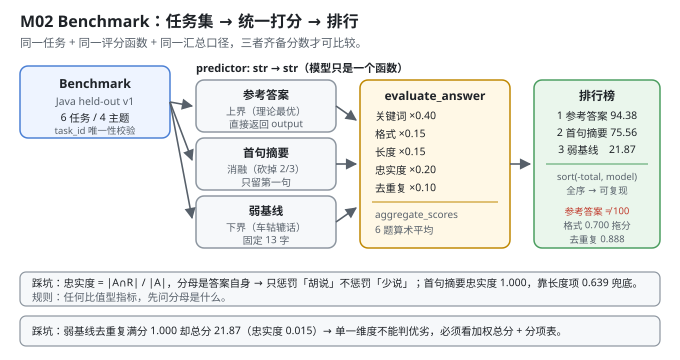
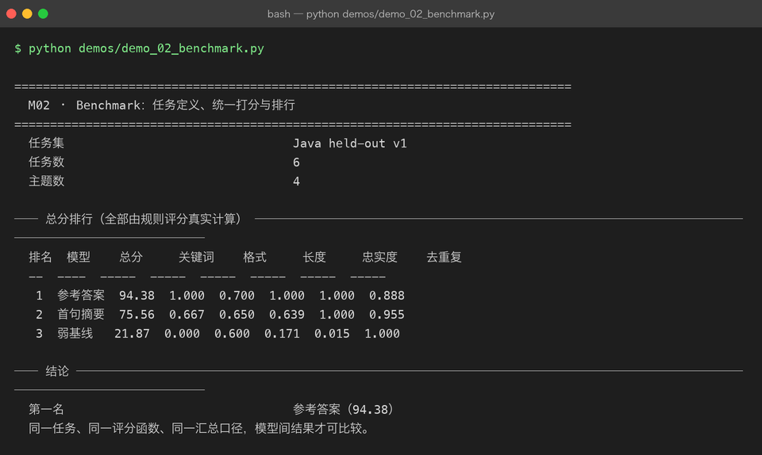

Milestone 02 — Benchmark：任务定义、统一打分与排行
M01 建立了指标：PPL、Token Acc、ECE。但指标只描述"模型在某个数据集上的表现"，还没回答"我要拿它干什么"。
这一层把评估升级成 Benchmark：一组任务（task），每个任务有 prompt、参考答案、关键词、主题；一个统一的打分函数；一张可排序的排行榜。
M01 的指标和 M02 的 benchmark 是两件事：
| M01 Evaluation | M02 Benchmark | |
|---|---|---|
| 单位 | token | 任务（task） |
| 打分 | 概率分布层面的统计量 | 可读答案的多维规则评分 |
| 可比性 | 同一分词器、同一数据 | 同一任务集 + 同一评分函数 + 同一汇总口径 |
纯 numpy 手写：任务集、评分器、汇总、排行全部自己实现（src/ie/benchmark.py、src/ie/autoeval.py），不引入任何评测框架。
1. Why：为什么"排行榜"必须有三个"同一"
一个 benchmark 分数只有在三个东西都固定的时候才可比较：
- 同一任务 —— prompt 必须一字不差（否则测的是 prompt 工程，不是模型）。
- 同一评分函数 —— 参数、权重、阈值都不能变。
- 同一汇总口径 —— 每题打分后怎么平均（本项目用简单算术平均，
aggregate_scores）。
违反任何一条，排行榜就是噪音。现实中大量"某某模型超越 GPT-4"的结论，问题都出在第三条 —— 换个汇总方式（macro vs micro、去极值与否）结论就翻。
本项目刻意不碰 MMLU / HumanEval 这类真实榜单：它们需要真实大模型才能跑出有意义的结果。这里的价值是把排行榜的骨架做对 —— 任务集抽象、评分器接口、可复现的排行，这些换到任何榜单上都一样。
2. Design：三个对象
BenchmarkTask(task_id, prompt, reference, keywords, topic) # 一个任务
Benchmark(name, tasks).evaluate(model_name, predictor) # 一个模型跑完所有任务
Benchmark.compare({name: predictor}) # 多个模型 → 排行榜predictor: Callable[[str], str]—— 模型被抽象成一个函数。这是整个设计的核心：不管背后是 7B 还是规则拼字符串，只要prompt → answer，就能进排行榜。本项目三个"模型"里有两个就是规则函数。tasks_from_records(records)—— 直接把 M03 的 held-out 记录转成任务（instruction → prompt，output → reference，topic由infer_topic推断）。评估集和 benchmark 用同一批数据，避免"两套数据各说各话"。Benchmark.compare按(-total, model)排序 —— 分数相同时按名字排序，保证排行榜在不同机器上完全一样（可复现性细节，但很重要）。
打分函数来自 M04 的 evaluate_answer（关键词 40% + 格式 15% + 长度 15% + 忠实度 20% + 去重复 10%），这里只做汇总与排行。

3. Real-run evidence（来自 demos/out/demo_02_benchmark_terminal.txt）
任务集 Java held-out v1，6 个任务 / 4 个主题（从 M03 的 held-out 前 6 条构造）。三个"模型"全是规则函数：
| 模型 | 做法 |
|---|---|
| 参考答案 | 直接返回 record["output"]（理论上界） |
| 首句摘要 | 只返回参考答案的第一句 |
| 弱基线 | 无论问什么都回答「Java 中需要根据具体情况分析。」 |
── 总分排行（全部由规则评分真实计算） ─────────────────────────────
排名 模型 总分 关键词 格式 长度 忠实度 去重复
-- ---- ----- ----- ----- ----- ----- -----
1 参考答案 94.38 1.000 0.700 1.000 1.000 0.888
2 首句摘要 75.56 0.667 0.650 0.639 1.000 0.955
3 弱基线 21.87 0.000 0.600 0.171 0.015 1.000
第一名 参考答案（94.38）四个读数：
- 参考答案 94.38，不是 100。这是最有信息量的一行：连"把参考答案原样交上去"都拿不到满分，说明评分函数不是"跟参考答案比对"，而是在独立地衡量答案质量。
0.700（格式）和0.888（去重复）是参考答案自己丢的分 —— 参考答案里有重复的 3-gram，格式也不完全符合"有列表/有冒号"的加分项。 - 首句摘要 75.56，忠实度却是满分 1.000。因为忠实度的定义是
|answer_terms ∩ reference_terms| / |answer_terms|—— 分母是答案自己的词，所以"少说"完全不被惩罚，只惩罚"多说"。这是本评分器的已知偏向，见 4.1。 - 弱基线 21.87，其中去重复 1.000（满分）。一个 13 个字的车轱辘话，在"去重复"这一项上拿了满分 —— 因为它根本没重复。单一维度完全不能判优劣，必须看加权总分和各分项。
- 弱基线忠实度 0.015，几乎为 0。它说的「Java」「根据」「具体」「情况」「分析」几乎都不是参考答案里的词。这一项才是真正把废话答案区分出来的东西（权重 20%，仅次于关键词）。

4. 踩坑 / 反直觉发现
4.1 忠实度是"查准率"，不是"查全率"—— 越短越容易满分
faithfulness = |answer_terms ∩ reference_terms| / |answer_terms| # src/ie/autoeval.py:97分母是答案自己的词数。后果：
- 只回答一个词且这个词在参考答案里 → 忠实度 1.000（首句摘要实测 1.000）。
- 回答很长但大部分不在参考答案里 → 忠实度很低（弱基线 0.015）。
所以忠实度单项惩罚"胡说"，不惩罚"不说"。必须和 length_reasonableness（权重 15%）配对使用 —— 后者在 ratio < 0.6 时按 ratio / 0.6 线性扣分，专门治"少说"。
实测印证：首句摘要长度项 0.639（被扣了），忠实度 1.000（被奖励了），两项合起来才给出合理的 75.56。
可迁移的经验：任何一个"比值型"指标，先问分母是什么。分母是自己 → 越短越占便宜；分母是参考答案 → 越长越占便宜。两种都不是质量度量，必须配对。
4.2 参考答案自己拿不到 100 分 —— 这是特性不是 bug
参考答案 94.38 分，丢了 5.62 分（格式 0.700、去重复 0.888）。
这不是评分器写错了。"参考答案"只是一个参考，不是唯一正确答案。评分函数衡量的是"这个答案像不像一个好的回答"（有关键词、有格式、长度合适、不复读），参考答案在这些维度上本来就不一定完美。
真正要警惕的是反过来：如果某个评分器给参考答案 100 分，那它一定在跟答案做字符串比对，也就失去了评估"没见过的好答案"的能力。
4.3 三个"模型"都是规则函数 —— 这不是偷懒
排行榜上的三项全是不调模型的规则函数。这看起来像"没测模型"，但实际上是最有价值的一类对照实验：
- 参考答案 = 上界（94.38）
- 首句摘要 = 信息量的消融（砍掉 2/3 内容，掉 18.82 分）
- 弱基线 = 下界（21.87）
先把评分器的动态范围标定出来，再往里放真模型。 如果你不知道"废话"该得多少分、"完美"该得多少分，真模型拿到的 60 分你也不知道该高兴还是该难过。
本项目后续各章（M05 的 adapter / INT8 比较）走的都是这条路线：先有可解释的对照组，再放真模型。
4.4 排序键必须全序，否则排行榜不可复现
rows.sort(key=lambda row: (-row["total"], row["model"])) # src/ie/benchmark.py:54只按 -total 排序时，Python 的 sort 是稳定的 —— 相同分数会保持输入字典的顺序，而 dict 顺序依赖于插入顺序。加上 model 作为第二键，排序变成全序，任何机器上跑出同一张表。
这类"可复现性细节"在 P08 已经踩过一次（Tensor._prev 是 set 导致跨进程不可复现）。本项目在排序、抽样（M03 的 seed）、指标汇总处都做了同样的处理。
5. Conclusion
- Benchmark = 任务集 + 评分函数 + 汇总口径；三者任一变化，分数就不可比。
predictor: str → str是核心抽象：模型只是一个函数，规则函数也能进排行榜当对照组。- 实测排行：参考答案 94.38 > 首句摘要 75.56 > 弱基线 21.87（6 任务 / 4 主题，全部由规则评分真实计算）。
- 参考答案只拿 94.38（格式 0.700、去重复 0.888）—— 评分器衡量的是"像不像好答案"，不是"像不像参考答案"。
- 忠实度是查准率不是查全率：首句摘要忠实度 1.000 却只拿 75.56，靠长度项 0.639 兜底。比值型指标必须先问分母是什么。
- 弱基线去重复满分 1.000 却总分 21.87 —— 单一维度不能判优劣，必须看加权总分 + 分项表。
- 手写实现的意义：因为评分器是自己写的，我才知道"参考答案为什么不是 100 分"；用
lm-eval-harness这类框架只能拿到一个分数，解释不了它。
6. Code map
| 文件 | 职责 |
|---|---|
src/ie/benchmark.py | BenchmarkTask（task_id/prompt/reference/keywords/topic）/ Benchmark.evaluate（单模型跑全任务）/ Benchmark.compare（多模型排行，(-total, model) 全序排序）/ tasks_from_records（把 held-out 记录转成任务） |
src/ie/autoeval.py | 提供 evaluate_answer 与 aggregate_scores（本章的打分与汇总口径来源，详见 M04） |
src/ie/evalset.py | infer_topic：给任务打主题标签，供"主题数"统计 |
demos/demo_02_benchmark.py | 3 节：任务集构造 / 三个 predictor / 总分排行 |
demos/out/demo_02_benchmark_terminal.txt | 本章所有数字的来源 |
assets/benchmark.svg | 本章 benchmark 流水线图 |
7. Version line
v0.1 → v0.2，M02 Benchmark 落地。实测（Java held-out v1，6 任务 / 4 主题）：排行 参考答案 94.38 > 首句摘要 75.56 > 弱基线 21.87；分项显示参考答案格式 0.700 / 去重复 0.888（拿不到满分），首句摘要忠实度 1.000 但长度仅 0.639，弱基线去重复 1.000 而忠实度仅 0.015。并诚实记录「忠实度分母是答案自身 → 惩罚胡说不惩罚少说」「三个"模型"均为规则函数，用于标定评分器动态范围」。纯 numpy、无评测框架。配图 1 张手写 SVG + 1 张真实终端截图。